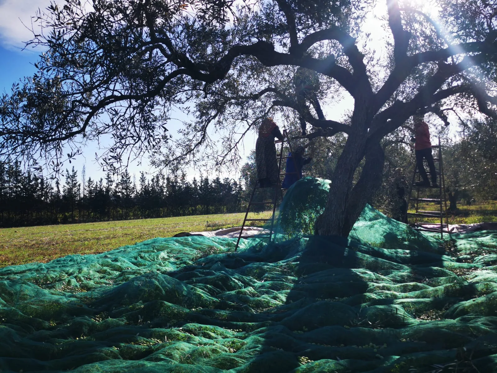

Acidité libre
0,18–0,23 %
La terre se souvient. Nous l'avons écoutée.
À neuf kilomètres de la mer, sur les hauteurs de Takelsa, des oliviers tiennent un savoir qu'on a choisi de ne pas laisser disparaître. Récolte à la main, précoce. Extraction à froid, dans les six à huit heures. Non filtrée.

Même terroir, même geste. Trois caractères — du plus vert au plus rond, jusqu'au plus rare.
Ce flacon est un cadeau. Dites-nous ce qu'il raconte.
Votre avis en 2 minutes